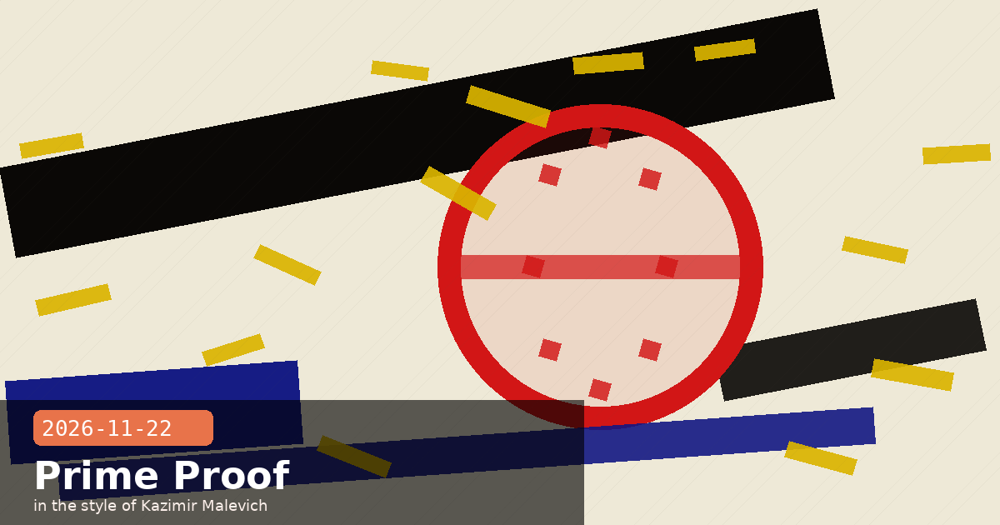

Riemann Hypothesis Formally Certified; Anthropic Closes IPO with Full Greenshoe at ~$118B; Claude Code 2.1.330 Ships Easel Charts

🧭 Lean FRO and Mathlib Certify Alpöge's Claude-Assisted Riemann Hypothesis Proof — 17 Million Lines of Lean Code Formally Verified
On Saturday November 22, Lean FRO and the Mathlib Initiative jointly declared they have "full confidence that Alpöge's proof of the Riemann Hypothesis is correct." Levent Alpöge, a mathematician and researcher at Anthropic, announced on Friday that he had collaborated with Claude throughout the discovery and formalisation process, describing the AI as an "interactive tool" rather than a simple assistant. The proof resolves not only the original 1859 Riemann hypothesis — which describes how prime numbers distribute across the integers — but also its generalised form, addressing the distribution of zeroes across a broad family of L-functions. If the Clay Mathematics Institute's review process (which requires peer review plus two years of public scrutiny post-publication) confirms the result, Alpöge will be eligible for the $1 million Millennium Prize.
What the certification involved
Scale: The proof comprises approximately 17 million lines of Lean 4 code distributed across 14 compressed archives. An informal human-readable explanation is promised but would exceed 250,000 pages — Alpöge noted a complete written argument would be "extremely long".
Multi-tool verification: Dozens of independent researchers compiled Alpöge's code and reproduced the same proof export. Two purpose-built checkers — comparator and con-leche — confirmed the theorem statement matches Mathlib's existing formalisation exactly. The export additionally ran through Lean's own kernel and third-party checkers written in independent programming languages.
The generalised result: Alpöge's proof covers the generalised Riemann hypothesis (GRH), which is the more powerful version implying the original RH. GRH had resisted every attack for 160+ years; its proof has immediate implications for cryptographic hardness assumptions, primality testing complexity bounds, and large swaths of analytic number theory.
Competing claim: Hours after Alpöge's announcement, Stanford researchers submitted an independent proof. Both proofs are now under simultaneous review; independent duplication at this scale is unusual and seen as a strong positive signal for the community's confidence in the result.
Claude's role in the proof
Alpöge described the collaboration as genuinely interactive: Claude was used to explore branches of the proof space, verify intermediate conjectures, generate and check candidate lemmas, and translate informal mathematical reasoning into formal Lean code. This is the first announced instance of Claude being credited as a named collaborator in a resolution of a Millennium Prize Problem. The nature of the collaboration — human mathematician directing, AI providing combinatorial search and formal verification — closely matches the "centaur" model that Anthropic's research division has been developing since early 2025.
What this means for developers working on formal verification
The proof's Lean codebase will be published in full once the Clay review process begins. For developers building proof-assistant tooling or using Claude for formal methods work, the most actionable near-term implication is that the Claude API's extended context window (2M tokens for Claude Fable) was essential: individual proof modules exceeded the 200K token capacity of earlier models. If you are building verification pipelines, plan your context budget accordingly and test with the Fable 5.2 model tier, which provides the full 2M window on the Accelerate and Enterprise Max API tiers.
Riemann hypothesisLean FROMathlibLevent Alpögeformal verificationMillennium PrizeGRH17 million linesClaude collaboration
🧭 Anthropic Closes IPO with Full Greenshoe Exercise — Total Gross Proceeds ~$118B Including Concurrent Private Placement to Seven Tech Giants
Anthropic announced the formal closing of its initial public offering on Saturday, confirming that underwriters fully exercised the greenshoe over-allotment option, adding 147 million additional Class A shares to the original offering. Combined with the base deal of 980 million shares, the final Class A tally is 1,127,000,000 shares at $82 per share — gross proceeds of approximately $92.4 billion from the public offering. Simultaneously, Anthropic closed the previously-announced concurrent private placement of 313.25 million Class N shares to seven strategic investors at the same $82 price, raising approximately $25.7 billion more. Aggregate gross proceeds across both transactions: approximately $118 billion — the largest technology capital raise in history.
Key closing details
Greenshoe significance: Full exercise of the over-allotment option is a strong signal from Goldman Sachs and Morgan Stanley (lead bookrunners) that aftermarket demand absorbed the extra supply without price support. The fact that ANT closed Day 3 at $107.40 — 30.9% above the $82 offer price — with the greenshoe fully exercised confirms the stabilisation period was not needed; underwriters exercised into genuine demand.
Class N concurrent placement investors: Advanced Micro Devices (AMD), Broadcom, Google, Micron Technology, Microsoft, NVIDIA, and TSMC Partners. Class N shares carry limited voting rights but the same economic interest as Class A. Anthropic described these as "long-term strategic relationships" — each investor has either an existing compute partnership or a Claude integration agreement.
Use of proceeds (confirmed in closing prospectus): (1) Model research, training compute, and infrastructure — the largest allocation; (2) Safety research and interpretability — explicitly ring-fenced; (3) Geographic expansion of the developer platform (APAC, EMEA); (4) General corporate purposes. No specific revenue targets or milestones were attached to the allocation buckets, consistent with Dario Amodei's stated policy of not issuing forward guidance.
Lock-up structure: All proceeds from selling stockholders (23.6 million Class A shares sold by existing holders) are subject to the same 180-day lock-up as the IPO; expiry ~May 18, 2027.
Developer platform implications of the capital raise
The $91.6 billion net proceeds received by Anthropic (after underwriting discounts) dwarf any previous AI company capital raise and materially change the infrastructure investment horizon. For developers: expect the API capacity promises in the Q1 2027 roadmap (500 MCP certified partners, 2M-token context for Fable 5.2 on Accelerate and Enterprise Max tiers) to be fully funded. The compute budget constraint that caused the August 2026 rate-limit event — which temporarily throttled Opus API access — is now resolved. If your production workloads were sized for conservative compute availability, you can begin planning for the higher capacity tiers announced November 20.
IPO closegreenshoe$118BClass N sharesAMDBroadcomNVIDIATSMCGoldman SachsMorgan Stanleylock-up
🧭 Claude Code 2.1.330 — Easel Built-In Charts, Enterprise Sign-In, and Self-Hosted Runner --start-dir
Released on November 21, Claude Code 2.1.330 ships three developer-facing features alongside a wide batch of terminal and VS Code reliability fixes. The headline addition is Easel — a built-in chart and diagram tool available to all Pro, Max, Team, and Enterprise plan users. Easel renders charts inline within the Claude Code interface without requiring an external tool or MCP server, using a simple natural-language command syntax. The second major addition is Enterprise sign-in with organisation settings management: administrators can now provision, configure, and revoke Claude Code access through Anthropic's Enterprise Admin Console rather than distributing API keys manually. The third is a --start-dir flag for self-hosted runner deployments, letting operators lock the runner's working directory at boot — a sandboxing improvement for multi-tenant infrastructure.
Easel: built-in chart tool
Invocation: Type /easel followed by a natural-language description of the chart you want, or ask Claude to "draw a chart of…" in a regular message. Easel interprets the request and renders the chart in a floating panel.
Chart types supported at launch: line, bar, scatter, pie/donut, area, histogram, and Gantt. Heatmaps and sankey diagrams are on the roadmap.
Data ingestion: Paste CSV or JSON directly into the prompt, reference an open file in your workspace, or ask Claude to generate synthetic data for the chart. For workspace files, Easel has read access to any file Claude Code can already see — no additional permission required.
Export: Charts export as SVG (vector) or PNG (raster at 2× resolution). The SVG export is fully editable in Inkscape or Figma, making Easel useful for draft charts that will be polished in a design tool.
Enterprise sign-in and self-hosted runner changes
Enterprise Admin Console provisioning: Admins set usage quotas, model access permissions, and allowed MCP server lists per user or group, all from the existing admin dashboard at console.anthropic.com. No code change is needed in the Claude Code client; sign-in with an organisation email automatically picks up the admin-configured policy.
Self-hosted runner --start-dir: Pass an absolute path at runner start: claude-code-runner --start-dir /workspace/projects. The runner refuses any file-system operations outside the specified subtree, providing a defence-in-depth layer on top of the existing sandbox. Useful for shared CI environments where multiple teams share a single runner host.
VS Code workflow additions:/fork creates a new branch and opens the project in a fresh Code Mode session; /workflows lists all saved prompt workflows for the current project, with keyboard shortcuts for quick invocation.
# Quick Easel example — generate a bar chart from inline CSV data
# Type this directly in Claude Code:
/easel bar chart from the following data:
Month, Revenue
Oct 2026, 1240000
Nov 2026, 1580000
Dec 2026, 1920000
Title: "Monthly Revenue Q4 2026"
Export: SVG
Use --start-dir in every CI pipeline that uses a self-hosted runner
Even if your runner container is already isolated, the --start-dir flag adds a process-level guard that stops Claude Code from accidentally following a symlink out of the workspace (a known class of escape in containerised CI environments). The flag costs nothing and adds a meaningful security layer. For GitLab CI: add --start-dir "$CI_PROJECT_DIR" to your runner startup command. For GitHub Actions self-hosted runners: set --start-dir "$GITHUB_WORKSPACE".